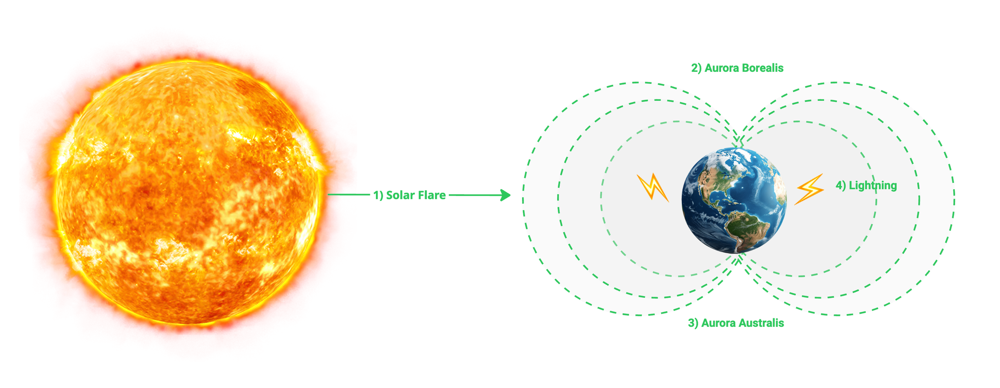
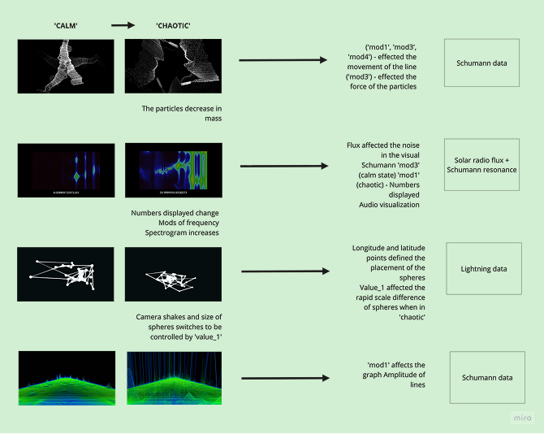
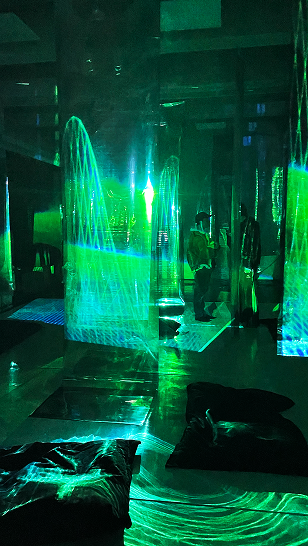
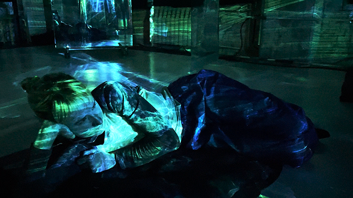

Miro
Used primarily for rough visualization, brainstorming and sharing ideas.
An immersive installation driven by live data
immersive installation · Real-time data visualisation · TouchDesigner · Projection mapping · Sound design
Exhibited at:
Hum of Existence, Funkhaus Berlin
Role:
Project Management/Visual Design
Year:
2024
Team:
Diya Bhattacharjee (Art Direction), Elena Dimitrova (Art Direction), Nicola Bisset (Creative Technologist), Dario Ruopso (Sound Designer)
We were tasked with creating an installation in Funkhaus, Berlin related to the theme of resonance.

We chose to visualize the Schumann Resonances, a set of electromagnetic waves referred to as “earth's heartbeat".

We chose to work in an agile manner, experimenting and researching independently and present our findings and updates in weekly meetings. This allowed us to stay up to date and in touch with each other's progress and obstacles. We used a number of collaborative tools to support this.
Used primarily for rough visualization, brainstorming and sharing ideas.
Used to keep track of the project on a task level and for detailed documentation related to data, prototyping and collaboration.
Used to record, transcribe, and summarise any online meetings and automatically share summaries.
We designed visuals in TouchDesigner that react to live data taken from:
The visuals responded to surges and irregularities we had identified in the data.

These visuals were projection-mapped onto reflective materials so light refracted across the room. We worked with a sound designer to add an auditory aspect to the installations that invited visitors to walk through the space.
Viewers sat, lay down, and even meditated in our installation. The space became both literally and figuratively reflective, this was in line with our initial vision. However some said they did not see an explicit relationship with the data and the installation. Our installation tends towards abstraction, which feeds the mystery and depth of the subject. I wonder if knowing the details of the role of the data would change viewer experiences.





In this project I had the pleasure of working in a team with diverse expertise. In collaborating I learned specifically about how to extract and work with data sets in TouchDesigner. I also learned what it means to collaborate with a sound artist and what kind of vocabulary they use to describe their work. This project has pushed me to explore more actively the role sound could/will play in my future work.